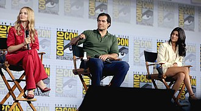

«Відьмак» (англ. The Witcher) — фентезійний серіал, заснований на серії романів Анджея Сапковського «Відьмак», що початково планувався як повнометражний фільм.
Кінотеатральна прем'єра «з червоними килимками» відбулася 16 грудня 2019 року, а інтернет-реліз — 20 грудня того ж року. Прем'єра другого сезону відбулася 17 грудня 2021 року.
У вересні 2021 року був анонсований третій сезон. У жовтні 2022 року розпочалася робота над сценаріями четвертого та п'ятого сезонів.
На 25 грудня 2022 року запланований вихід приквела серіалу — «Відьмак: Походження».
Зміст
- 1.Сюжет
- 2.Акторський склад
- 3.Український дубляж та багатоголосе закадрове озвучення
- 3.1.Українське багатоголосе закадрове озвучення студії НеЗупиняйПродакшн
- 3.2.Українське багатоголосе закадрове озвучення студії SVOЇ production
- 3.3.Український дубляж студії Postmodern
- 4.Історія створення
- 4.1.Фільм
- 4.2.Серіал
- 4.2.1.Перший сезон
- 4.2.1.1.Перший тизер
- 4.2.2.Другий сезон
- 4.2.3.Третій сезон
- 4.2.1.Перший сезон
- 5.Оцінки й відгуки
Сюжет
Перший сезон
Події відбуваються у вигаданих Північних королівствах, яким загрожує завоюванням імперія Нільфгаард. Ці держави населяють головним чином люди умовного пізнього середньовіччя, але також і різні фантастичні істоти, котрі тепер перебувають у скрутному становищі. В змішаному хронологічному порядку зображаються історії трьох головних персонажів: відьмака Ґеральта, що бореться за винагороду з чудовиськами, амбітної чарівниці Єннефер і юної принцеса Цірілли, що стала названою дочкою Ґеральта.
Відьмак Ґеральт володіє надзвичайною силою, витривалістю та довголіттям, здобутим внаслідок небезпечної підготовки. Відьмаків зумисне готують для боротьби з чудовиськами, проте їхня праця невдячна — відьмаків остерігаються та бояться, а також вони не можуть мати дітей. Ґеральт убиває княжну-втікачку Ренфрі, що стала розбійницею, через що отримує прізвисько «М'ясник з Блавикена». Згодом він звільняє від прокляття лицаря Йожа, давши йому возз'єднатися з донькою короля Рагнера — Паветтою. За це Ґеральт користується «правом несподіванки» — отримати те, що король має, але про це ще не знає. Цією несподіванкою стала ще ненароджена донька Паветти — Цірілла.
Негарну горбату дівчину Єннефер забирає в батьків чаклунка Тіссая для навчання в магічній школі Аретузи. Будучи напів-ельфою, Єннефер володіє здатністю чаклувати, проте погано володіє своїм даром. Зрештою це й рятує її, адже найсильніших учениць Тіссая перетворює на вугрів, аби живити магічне джерело. Решта ж віддаються для захисту шляхецьких сімей. Єннефер з допомогою друга-чарівника Істредда потай проходить обряд, яким набуває прекрасного вигляду, натомість втративши можливість мати дітей. Вона легко втирається в довіру до королівського двору Лірії, але їй не вдається врятувати королеву Каліс і її доньку від убивці.
Ґеральт зустрічає чарівника Стреґобора, від якого дізнається про близьке повернення богині Ліліт, яку приведуть шістдесят обраних дівчат. Відьмак розслідує родовід короля Фольтеста, розкриваючи, що чудовисько стриґа, що тероризує його землі — донька короля, зачата внаслідок інцесту. Ґеральт бере в компанію мандрівного барда Любистка та знайомиться з Єннефер, що оселилася осторонь. Чарівниця нерозсудливо вселяє в себе джинна аби повернути здатність завагітніти, чому стає на заваді Ґеральт. Він закохується в Єннефер і вирішує віддати їй на виховання Ціріллу.
Минає час і Нільфгаард починає наступ на Північні королівства, винищуючи всіх на шляху й піддаючи їх жорстоким стратам. Чарівник Мишовур стримує наступ, даючи Ціріллі час утекти. Дівчинка ховається в лісі, де знаходить сховок ельфів і знайомиться з ельфом Дарою. Пізніше вона покидає ліс у пошуках рідних і їй вдається розшукати Мишовура. Проте це виявляється перевертень, підісланий лицарем Нільфгаарду Кагиром. Він лишає Ціріллу зв'язаною замерзати, та її звільняє Дара.
Згодом Ґеральт натрапляє на біженців, у яких знаходить Ціріллу. Тим часом нільфгаардці під проводом Кагира ідуть в наступ. У замку при Соддені чародії, включаючи Йеннефер, дають їм тривалий бій, але зрештою нільфгаардці зазнають поразки.
Другий сезон
Ґеральт вирішує відвезти Ціріллу в колишню цитадель відьмаків Каер Морхен. Зі слів чаклунки Тіссаї він вирішує, що Єннефер загинула. Дорогою Ґеральт навідується до свого знайомого, проклятого ватажка розбійників Нівеллена, який розповідає легенду про Дикий гін. Тіссая допитує Кагира, щоб дізнатися про справжні плани нільфгаардців, у яких вона знайшла прихисток. Єннефер у той час перебуває в полоні нільфгаардців, Фрінгілла веде її з іншими полоненими в Цинтру, але на групу нападають ельфи. Єннефер опиняється у чарівниці Франчески, радник Філавандрель каже лишити полонянку живою. Єннефер і Фрінгілла виявляють, що бачать подібні сни, та розповідають про це Філавандрелю. Такі сни можуть означати здійснення пророцтва про відродження могутності ельфів, отож Франческа вирішує перевірити це. Всі троє бачать під час ритуалу богиню Безсмертну матір. Фрінгілла приєднується до Франчески, щоб утворити ельфійсько-нільфгаардський союз; Єннефер проти цього та намагається втекти крізь магічний портал, але виявляє, що втратила чаклунські сили. Безсмертна матір потім неодноразово просить прикликати її.
У Каер Морхені Ґеральт дізнається, що чудовисько лєший заразило одного з відьмаків. Розуміючи, що Каер Морхен в небезпеці, Ґеральт погоджується навчати Цірі бою. Відьмак Весемир досліджує останки лєшого та відкриває, що Цірі можливо успадкувала Старшу кров, що дає надію створити нове покоління відьмаків. Ґеральт зустрічає небачене досі чудовисько та береться розслідувати звідки воно взялося. Чаклунка Трісс прибуває в Каер Морхен і встановлює, що істота пов'язана з Монолітами, які з'явилися під час злиття світів, що колись породило світ Відьмака. Цірі зізнається, що незрозумілим чином повалила один Моноліт, коли тікала від нільфгаардців. Трісс дає в допомогу Ґеральту дослідника Монолітів Істредда. Дорогою Ґеральт припускає, що Моноліти — це не наслідок злиття світів, а причина.
Братство чародіїв підозрює Єннефер у шпигунстві на користь Нільфгаарду, тому наказує їй стратити Кагира, щоб довести свою вірність. Але вона натомість тікає разом з ним до міста Оксенфурт, де відбувається погроми проти ельфів. Шпигуни Сигізмунд Дейкстра і Філіппа Ейлхарт планують захоплення Цинтри. Вони вербують ув'язненого ельфа Дару як інформатора. Тим часом Єннефер і Кагир сподіваються відплисти в Цинтру з ельфами, яких Любисток допомагає таємно переправити. Проте Любистка в результаті схоплює маг Рієнс і допитує про розташування Ґеральта. Любистка визволяє чарівниця Лідія, що шукає Цірі. Єннефер після чергових вагань викликає Безсмертну матір і отримує завдання доставити Цірі до місця за межами Цинтри.
Цірі погоджується використати свою кров для створення нових відьмаків, але за умови, що стане першою з них. Ґеральт не дає виконати перетворення, вважаючи, що це надто небезпечно. Трісс цікавиться Цірі та розуміє, що носійка Старшої крові принесе величезні руйнування і спинити це неможливо. Коли Ґеральт вивозить Цірі з Каер Морхену, на них нападає істота чорнобог, кінь Ґеральта гине. Вони вирішують спинитися в храмі, де, як думає Ґеральт, Цірі навчиться керувати своїми силами. В той час Весемир і Трісс потрапляють у засідку Рієнса, який краде мутагени, зроблені з крові Цірі, потрібні для створення відьмаків.
Ґеральт і Цірі зустрічають Єннефер у храмі. Вона застерігає про небезпеку для Любистка та Цірі. Рієнс знаходить Цірі, тоді Єннефер вчить її як відкрити портал і втекти. Трісс потім розповідає Тіссаї про Старшу кров Цірі. Ґеральт розуміє, що Єннефер перебуває в союзі з Безсмертною матір'ю, котра насправді не богиня, а демониця Волет Меїр, що харчується болем. Франческа ж успішно народжує першого за багато років чистокровного ельфа. Натхненні цим, ельфи, що були на службі в Нільфгаарду, відвертаються від вимушених союзників.
Єннефер продовжує навчати Цірі, та читає її думки і випадково дізнається про її зраду. Ненавмисне Цірі створює спалах, який привертає увагу нільфгаардців. Проте Ґеральт з кількома товаришами встигає прибути на допомогу. Тоді ж Франческа виявляє, що її дитина вбита. Підживлена її болем, Волет Меїр отримує достатньо сил, щоб звільнитися, та вселяється в Цірі. Одержима нею, Цірі вбиває відьмаків у Каер Морхемі та активовує Моноліти. Єннефер погоджується прийняти Волет Меїр у себе, щоб звільнити Цірі. Тоді Цірі переносить Єннефер до світу демониці, проте її та Ґеральта затягує туди ж. Волет Меїр покидає тіло Йеннефер. Наближається Дикий гін, чий командувач каже до Цірі приєднатися. Об'єднавши зусилля, Цірі, Ґеральт і Єннефер повертаються в Каер Морхен. Єннефер виявляє, що тепер її чаклунські сили повернулися.
Франческа, винячи людей у смерті дитини, організовує вбивство людських дітей. Але дізнавшись про Цірі, Франческа вважає, що її Старша кров ще може врятувати ельфів від виродження. Братство чародіїв планує розшукати Цірі та вбити, зазначаючи про підготовку Нільфгаарду до нової війни. Рієнс потім розповідає комусь у шинку, що ситуація на континенті дуже вигідна. Ґеральт міркує про те, що за допомогою Цірі мешканці різних світів можуть повернутися додому. Її справжній батько, нільфгаардський імператор Емгир (якого неодноразово згадували під іменем Біле Полум'я), прибуває в Цинтру та повідомляє, що це він убив дитину Франчески аби знайти дочку.
Третій сезон
Робота над третім сезоном фентезійного драматичного серіалу «Відьмак», заснованого на циклі творів Анджея Сапковського про відьмака Геральта, розпочалася у 2020 році. Він був офіційно анонсований у вересні 2021 року.
Відомо, що літературною основою сценарію стане роман Анджея Сапковського «Час Погорди». Шоураннер проекту пообіцяв в одному з інтерв'ю, що в третьому сезоні будуть показані дуже масштабні події.
Акторський склад
- Генрі Кавілл — Ґеральт із Рівії;
- Фрейя Аллан — Цірілла;
- Аня Чалотра — Єннефер;
- Джоді Мей — Каланте;
- Бйорн Глюнур Гаральдссон — Ейст Турсеах;
- Адам Леві — Мишовур;
- Емма Епплтон — Ренфрі;
- Міанна Берінг — Тіссая;
- Мімі Ндівені — Фрінгілла;
- Махеш Джаду — Вільгефорц;
- Теріка Вільсон-Рід — Сабріна;
- Імон Феррен — Кагір;
- Джої Беті — Яскір (в адаптації студій «НеЗупиняйПродакшн» і «Postmodern» — Любисток);
- Ларс Міккельсен — Стрегобор;
- Ройс Пірресон — Істред;
- Мацей Мусял — сір Ласло;
- Вільсон Раджу-Пухальте — Дара;
- Анна Шаффер — Трісс;
- Ребекка Бенсон — Марилька;
- Шейн Еттвулл — Ногорн;
- Люк Ніл — Вир;
- Меттью Ніл — Німир;
- Тобі Бамтефа — Данек;
- Санні Серкіс — Мартин;
- Родерік Гілл — Флетчер;
- Інге Бекман — Арідея;
- Шарлотт О'Лірі — Тіффанія;
- Наташа Кулзак — Торувієль;
- Аміт Шах — Торкве;
- Том Кентон — Філавандрел;
- Барт Едвардс — Йож (Дані);
- Гая Мондадорі — Паветта
Український дубляж та багатоголосе закадрове озвучення
Українське багатоголосе закадрове озвучення студії НеЗупиняйПродакшн
Перший сезон серіалу українською озвучено некомерційною студією «НеЗупиняйПродакшн» у 2019 році
Ролі озвучували:
- Роман Молодій — Ґеральт із Рівії, Данек
- Антоніна Хижняк — Цірі, Йеннефер, Ренфрі, Марілька, Фрінґілла, Сабріна
- Олександр Солодкий — Любисток, Істредд, Мартін, Дара, Кагир
- Олена Узлюк — Каланте, Тіссая, Трісс
- Євген Малуха — Стреґобор, Мишовур, Фольтест
- Михайло Войчук — Ейст, Філавандрель, Араторій, Остріт, Хіреадан, Вільґефорц
Українське багатоголосе закадрове озвучення студії SVOЇ production
Перший сезон серіалу українською озвучено некомерційною студією "SVOЇ production" у 2019 році[17].
Ролі озвучували: Руслан Ткачук, Каріна Демченко, Марія Веласкес
Український дубляж студії Postmodern
Перший сезон серіалу дубльовано українською студією «Postmodern» на замовлення компанії «Netflix» у 2021 році.
Ролі дублювали
- Дмитро Гаврилов — Ґеральт із Рівії
- Павло Скороходько — Любисток
- Марія Яценко — Єннефер
- Катерина Манузіна — Цірілла
- Олександр Погребняк — Кагір
- Ольга Радчук — Королева Каланте
- Олена Борозенець — Ренфрі
- Андрій Мостренко — Король Ейст
- Людмила Петриченко — Тіссая
- Олександр Ігнатуша — Стреґобор
- А також: Аліна Проценко, Аліса Балан, Роман Солошенко, Павло Голов, Роман Молодій, В'ячеслав Дудко, Тимур Асланов, Наталія Ярошенко, Світлана Шекера, Андрій Альохін, Вероніка Лук'яненко, В'ячеслав Хостікоєв
Творча команда
- Перекладач — Федір Сидорук
- Перекладач пісень — Андрій Желуденко
- Режисер дубляжу — Людмила Петриченко
- Звукорежисер — Наталія Литвин
- Звукорежисер перезапису — Андрій Желуденко
- Менеджер проєкту — Ольга Нагієвич
Історія створення
Від початку над проєктом працюють американська компанія The Sean Daniel Company та польська компанія Platige Films, яка раніше вже отримала досвід роботи з цим сетингом, створивши вступний ролик до відеогри «Відьмак 3».
Фільм
У пресрелізі фільму було оголошено, що головним героєм стане Ґеральт із Рівії, проте це буде не пряма адаптація якогось з романів чи певної комп'ютерної гри, а наслідування мотивів оповідань «Відьмак» та «Менше зло» зі збірки «Останнє бажання».
Режисером фільму мав стати оскарівський номінант 2002 року Томаш Багінський, а сценаристкою — Таня Сент-Джон. Зайнятися музикою до стрічки висловлював бажання ізраїльський композитор Міша Сегал[en][19].
Зйомки планувалися в Польщі, зокрема у Бещадах та Підляшші. Також розглядалася можливість зйомок в Україні або Білорусі.
Серіал
Перший сезон
Після того, як «Netflix» взялася співпродюсувати фільм, його перепрофілювали на серіал.
Творчим консультантом серіалу став автор першотвору Анджей Сапковський. Шоуранеркою та виконавчою продюсеркою телесеріалу є Лорен Шмідт-Гісріх. Відьмака Ґеральта зіграв Генрі Кавілл.
Чотири епізоди поставив Алік Сахаров, ще по дві серії зняли режисери Алекс Гарсія Лопез та Шарлотта Брандстрем. Всього у першому сезоні планувалося 8 серій.
Зйомки мали початись в кінці 2018 року та проходити у Центральній Європі, зокрема в Угорщині та Словаччині, а також у Південній Африці. 7 листопада почалися зйомки в Будапешті.
Британський актор Генрі Кевілл отримав не більше 400 тисяч доларів за один епізод першого сезону серіалу «Відьмак».
Перший тизер
Перший тизер серіалу показаний 19 липня 2019 року. На його основі журналісти порталу CBR визначили оповідання Анджея Сапковського про Ґеральта, які могли увійти до серіалу[27]. У трейлері вгадуються сцени «Відьмака» та «Меншого зла» зі збірки «Останнє бажання» (зняття чар зі стриґи — померлої дочки короля Фольтеста та протистояння Ґеральта банді принцеси Ренфрі з Крейдена), а також сцени, пов'язані з юною Цірі (оповідання «Меч призначення»), та сцени, згадані Сапковським побіжно і не описані докладно. Наприклад, показано минуле однієї з головних героїнь, чаклунки Єннефер, де вона постає горбатою.
Другий сезон
Робота над другим сезоном серіалу почалася наприкінці 2019 року, ще до прем'єри першого сезону. Датою прем'єри є 17 грудня 2021 року.
Третій сезон
Робота над третім сезоном серіалу почалася восени 2020 року.
Оцінки й відгуки
На агрегаторі Rotten Tomatoes 1-й сезон серіалу зібрав 68 % позитивних рецензій від критиків і 91 % від пересічних глядачів. Для 2-го сезону це відповідно 94 % від критиків і 61 % від решти глядачів.
Браян Лоурі для CNN відгукнувся, що «Відьмак» чесно зайняв своє місце серед стримінгових серіалів, попри те, що сюжет розгортається нерівно, а очікування глядачів можуть бути обмануті. «Netflix визнав серіал успішним, що досить важливо після його гучних провалів з іншими дорогими науково-фантастичними/фентезійними ставками цього року, включаючи „Ковбой Бібоп“ і „Спадщина Юпітера“, жоден з яких не отримав другого сезону. Нещодавній натиск великих потокових серіалів з літературною основою (серед них „Колесо часу“ та „Фундація“) підживив неминучі спекуляції щодо пошуків чергової „Гри престолів“, які не є вельми справедливі. З мечем у руках Ґеральт і компанія вибороли власну нішу».
Роксана Гададі з «Vulture» підкреслила, що серіал найцікавіший у стосунках між Ґеральтом, Єннефер і Цірі, а також у дослідженні того, як породжуються чудовиська. Та він прагне використати більше фантастичних тропів, ніж може подужати, а надмір сюжетних ліній розсіює увагу глядачів. Серіал у результаті надто громіздкий, особливо для тих, хто не знайомі з книжковим першоджерелом. «Для глядачів, які не знають про зовнішній світ Відьмака, введення в серіал персонажів і місць з невеликою преамбулою, а також повторюване використання певних термінів і фраз без особливих пояснень є тривожним каменем спотикання. («Біле полум’я» це в буквальному чи переносному сенсі?» — це питання, яке ви можете задати не раз)».
На думку Енджі Ган із «The Hollywood Reporter», «„Відьмак“ не особливо намагається розібратися в найтемніших куточках людського досвіду. Він надто кумедний, створюючи круті відеоігри або представляючи нові види дорогих монстрів-спецефектів, щоб сприймати себе вельми серйозно. Але є щось зворушливо людське в тому, що Ґеральт захищає дитину, яка дивиться на нього, екзистенційна криза Єннефер після серйозного удару по її самоідентичності або боротьба ельфів за створення майбутнього у світі, який ворожий до них. І хто в 2021 році не зможе поспівчувати страху перед наближенням загибелі, який пронизує майже кожну сюжетну лінію?». На думку Енджі Ган, другий сезон робить провідною темою батьківство, особливо на лінії Весемир — Ґеральт — Цірі, і це значно цікавіше, ніж боротьба з черговим «чудовиськом тижня» та спроби нагадувати «Гру престолів».
Як писала Лейт Батлер у «Time», порівняно з першим сезоном, другий помітно доречніше використовує гумор і сексуальні сцени, Ґеральт має виразніший стоїчний характер, якість гри акторів зросла, а серіал в цілому наважується піднімати серйозніші теми. «Шоу досягло найбажанішого стану душі глядачів, принаймні для мене: я хочу знати, що станеться з цими персонажами далі. І це найкраще, на що може сподіватися будь-який оповідач».
Продажі відеогри The Witcher 3: Wild Hunt у грудні 2019 року завдяки інтересу до серіалу зросли на 554 %, порівняно з груднем 2018.